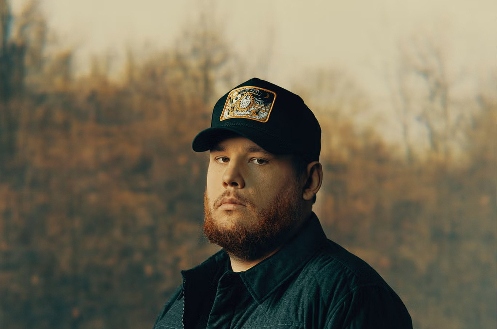

Biografia

Luke Albert Combs (Huntersville, 2 de março de 1990) é um cantor country norte-americano. Ele nasceu e cresceu na Carolina do Norte, onde se apresentava quando criança. Após deixar a faculdade para seguir carreira musical, ele se mudou para Nashville e lançou seu EP de estreia, The Way She Rides, em 2014.
Em 2017, Combs lançou seu álbum de estreia, This One's for You, que alcançou a quarta posição na Billboard 200. Seu segundo álbum, What You See Is What You Get, foi lançado em 8 de novembro de 2019 e liderou as paradas em múltiplos territórios, sendo o primeiro dele a atingir tal feito.
Ele recebeu três indicações ao Grammy Awards, dois iHeartRadio Music Awards, quatro Academy of Country Music Awards e seis Country Music Association Awards, incluindo o prêmio de Entertainer of the Year em 2021 e 2022, a maior honraria da associação.